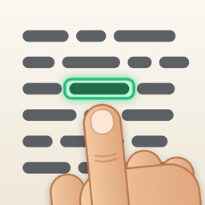

Deutsch · English

Fingertip hilft beim Lesen in einer fremden Sprache: Du zeigst im Buch mit dem Finger unter ein Wort, die App liest es vor, übersetzt es und erklärt es auf Wunsch.
Fragen, Fehler oder Wünsche: support@nrg-app.com
Stand: 13. Oktober 2026
Diese Richtlinie beschreibt, wie die App Fingertip („die App“, Bundle-ID dev.christianhoney.fingertip) mit deinen Daten umgeht. Verantwortlich ist Christian Honey (Kontakt: support@nrg-app.com).
Die App nutzt die Kamera, um den Text der Buchseite und deine Fingerspitze zu erkennen. Das Kamerabild wird ausschließlich auf dem Gerät und nur im Moment der Aufnahme ausgewertet. Es wird nicht gespeichert und nicht übertragen. Den Kamerazugriff kannst du jederzeit in den iOS-Einstellungen widerrufen.
Die App liest die Drehung des Geräts aus, um die Markierung ruhig auf dem erkannten Wort zu halten. Diese Messwerte werden nur im Arbeitsspeicher verwendet und weder gespeichert noch übertragen.
Texterkennung, Übersetzung, Erklärung und Sprachausgabe laufen über Funktionen von iOS auf dem Gerät (Vision, Übersetzen, Apple Intelligence, Sprachausgabe). Die erkannten Wörter und der umgebende Text verlassen dabei das Gerät nicht. Sprachpakete und Stimmen lädt iOS bei Bedarf von Apple; dafür gelten die Datenschutzbestimmungen von Apple.
Auf dem Gerät gespeichert werden nur deine Einstellungen in der App (Sprachen, Ausgabeart, Stimme, Bildwinkel, Licht). Sie werden mit dem Löschen der App entfernt.
Da die App keine personenbezogenen Daten erhebt, gibt es beim Anbieter keine Daten über dich, die berichtigt oder gelöscht werden könnten. Bei Fragen zum Datenschutz erreichst du uns unter der oben genannten Adresse.